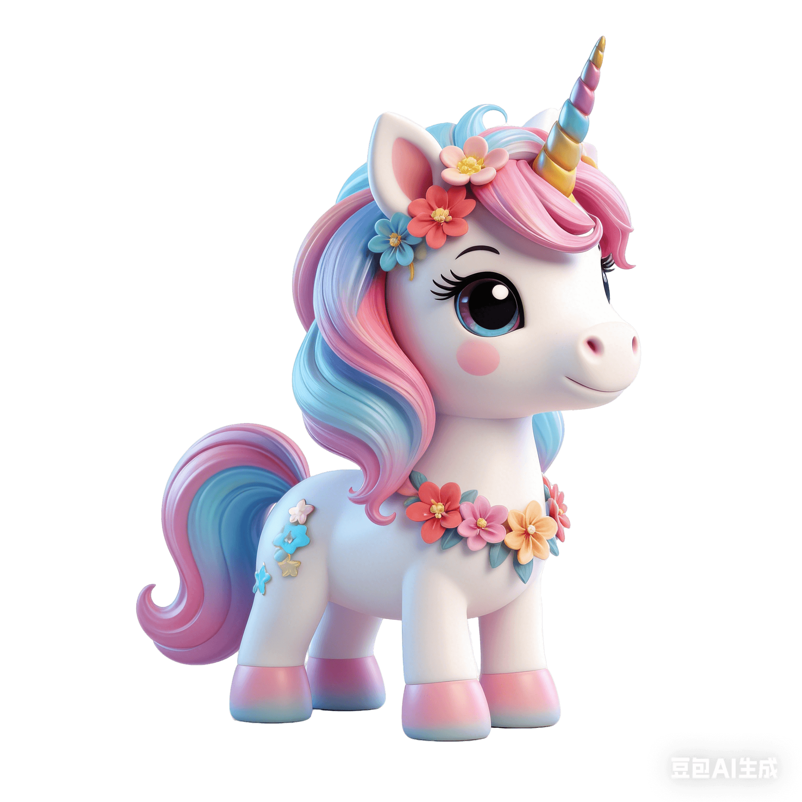
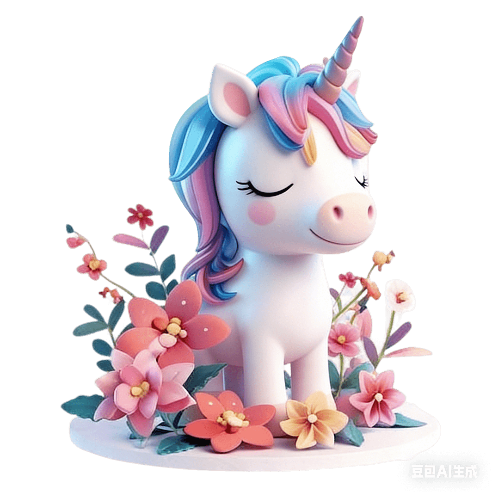

🏠 Home
⚙️ Settings
🦄
magical spelling
✨
📄
word list
📥 load & use
➕ add words
⭐ set as default
📚 current:
master word bank
(
words)
🔍 show all words
📋 show test words
🎯 選擇單詞組 (可多選)
✨ 點擊切換
💡 提示：未選任何組則默認全選所有組
🔢
words per session
🌟 max (all)
🎲
selection mode
✨ random ✨
📋 sequential
❤️
max hearts
🦄
start dictation!
✨
✨ word 1 / 40
❤️❤️❤️❤️❤️❤️❤️❤️❤️❤️
UK 1
UK 2
US 1
🐢
0.7x
🐇
📖 例句朗讀：
💬 sentence-UK
💬 sentence-US
✅ check
📘 Learn
⏭️ Skip
✨
🔍 show answer
⏩ skip
📥 Export Summary
🔄
practice again
🌸 all loaded words 🌸
close
📝 add new words
One word per line:
cancel
✨ add to library